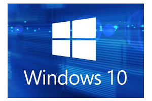

È inegavel a popularidade que o sistema operacional Windows possui nos dias de hoje.Aponta-se que o SO esta presente em mais de 90% dos computadores do mundo todo.
Porem, como muitos devem saber, nem sempre foi assim. O windows não nasceu da forma como conhecemos nem com todos os recursos com os quais estamos familiarizados. Houve um processo gradual de evolução em que a Microsoft aprendeu quais eram as necessidades das pessoas e aperfeiçoou funcionalidades para equipar o seu programa.
Anos de historia
O primeiro sistema operacional lançado pela companhia chegou ao mercado no ano de 1985. Desde então, muitas versões do seu software par equipar estações de trabalho foram entregues aos consumidores
A primeira versão do windows
A primeira versão do SO foi lançada em novembro de 1985 e foi a tentativa inicial da companhia em entregar uma interface grafica
O windows 1 foi construido sobre o MS-DOS e seu funcionamento se apoiava bastante nas entradas inseridas nas linhas de comando do sistema. apesar disso, a Microsoft ja havia colocado suporte ao mouse, incluindo tambem um jogo para "ensinar"as pessoas a ultilizarem esse novo periférico.
O Windows 2.0
Dois anos depois da estreia no mercado de sistemas operacionais, a Microsoft resolveu fazer o lançamento do Windows 2 em dezembro de 1987. A grande inovação desse software era a possibilidade de as janelas sobreporem umas as outras. funcionalidade que parece piada nos dias de hoje, Tambem foi incluida a possibilidade de minimizar e maximizar as janelas; alem disso, o conhecido Painel de controle, que reunia as principais ferramentas do sistema. tambem fez a sua estreia no Windows 2. Outras duas ferramentas que apareceram debutaram nessa versão e permanecem até hoje, são elas o word eo Excel-pertencentes ao Pacote Office.
As outras versões
Com o passar do tempo, o Windows foi sempre se atualizando ate chegar nos padrões que conhecemos hoje.Clique aqui para conhecer todas as versões do Windows